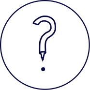
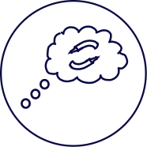
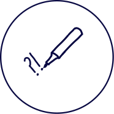
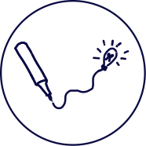
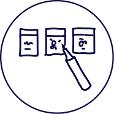
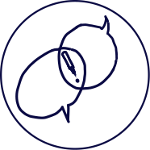
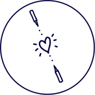

Oefenen
verdiepen
Inspiratie
over
Material Indienen
Material Indienen
Home
Oefenen
Tekenmethodes
Bekijk alles

Op vraag

Leren over jezelf en reflecteren

Onderzoeken en begrijpen

Creatief denken

Organiseren en plannen

Communiceren en presenteren

Leren over anderen